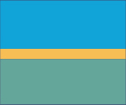
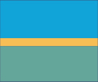
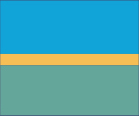

Sugerimos olhar também a página de Passeios e Eventos e a página de Mapas.
O Projeto Buscapé de Boiçucanga (SP) idealizado por Eudes Assis, foi fundado e coordenado pelo Cabo William em 2006, e têm como presidente do projeto Celestino Jorge, um policial militar da região. Foi criado com a intenção de ajudar as crianças carentes de Boiçucanga, com atividades nos períodos ociosos pós e pré-escolar. Atualmente a iniciativa pretende "desenvolver atividades sociais, orientar crianças e adolescentes para o exercício correto da cidadania, preparar as crianças e adolescentes para o futuro, promover palestras voltadas para o desenvolvimento da consciência humana, conscientização da preservação do meio ambiente e realizar interface com o setor governamental em ações educativas, ambientais, esportivas e de assistência social."
Confira um pouco mais sobre esse projeto no vídeo abaixo, publicado por Flavio Pinto:
Projeto Buscapé from Flavio Pinto on Vimeo
O vídeo acima é antigo e provavelmente foi produzido para promover a página de Facebook. O projeto costuma atender mais de 100 jovens da região, com muitas atividades interdisciplinares, "...judô, jiujitso, artes, violão, artesanato, gastronomia, ioga... Disciplinando eles para o mercado de trabalho...".
Com o apoio de doadores, o projeto construiu uma edificação com dois pavimentos, nos fundos do prédio militar, onde os jovens participam das atividades. A edificação possui: uma cozinha específica para as aulas de gastronomia que pode receber até 60 jovens, uma estrutura de apoio com sanitários adaptados para pessoas com necessidades especiais, uma sala multi-uso para aulas de artes marciais, música e teatro; e uma área ao ar livre para atividades como yoga e artes plásticas. A obra que foi finalizada em 2016, têm escrito em seus tijolos os nomes de pessoas que contribuiram com o projeto.
Veja alguns desses resultados no vídeo abaixo publicado no canal da Tamoios News:
Em meados de Julho, a praia de Boiçucanga costuma receber o evento chamado de Arraial Gastronômico, promovido pelo Projeto Buscapé. Chegando em sua 8a edição, costuma possuir atividades culturais, esportivas e culinárias. Normalmente recebe chefs renomados, que trazem pratos saborosos, com preços acessíveis. O valor arrecadado costuma ser revertido para o projeto.
Este evento costuma acontecer na Praça do Pôr do Sol, na Praia de Boiçucanga. A entrada é gratuita e os pratos costumam custar entre R$ 5,00 à R$ 20,00.
Conheça mais sobre o projeto na página de Facebook organizada por eles.
Escrito por Eduardo Cole.
Sugerimos olhar também a página de Passeios e Eventos e a página de Mapas.
Passeios de paraglider no mirante de Boiçucanga - falar com Maresias Tur (12) 99650 - 9051
Passeio no Mirante Bar Baleia - vista, petiscos e bebidas - (12) 3863-6250
Passeio de Banana Boat na Praia da Baleia, falar com Junior (11) 99911-37641
Escolas de Surf na Praia da Baleia - falar com Heitor (12) 99512-9012 ou Rodrigo (12) 99759-0968
Aluguel de Standups e Caiaques em Camburizinho - falar com Ricardo (12) 99787-3928
Passeio de barco para as ilhas, com saídas da Praia da Barra do Sahy - falar com Tide (12) 99611-2529
Passeio de barco para a ilha dos gatos e praia brava, com saídas da praia de boiçucanga - falar com André (12) 99705-6636
Sirena Maresias - balada com shows (11) 3071 - 2445
Parador Maresias - balada com shows (11) 2769 - 1112
